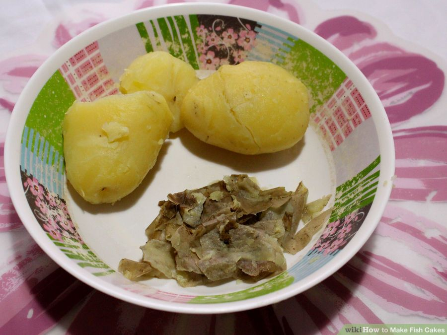

Korean Fish Cake Recipe
Ingredients
- 450g of cooked fish
- 2 potatoes,cooked and peeled
- 2 tablespoons fresh,chopped parsley
- Salt and freshly ground black pepper
- 130g breadcrumbs
- 1 onion,diced
- Butter,melted in microwave
Instructions
- Poach the fish in milk or water until flaky
- Cod is the favourite choice of Maritimers, but salmon is preferred by some.
You can also use haddock as another all the skin and bones after cooking them.
- Boil the potatoes and peel them.

- Place the fish and potatoes in a bowl and mash them together with a fork.
- They should be together well.

- Mix the eggs,parsley,onion and breadcrubs.Add to the fish and potato.j
- Add salt and pepper for flavor.Stir well.
- Frolm the mixture into 8 patties,lightly forming into rounded flat patties.

- Fry in butter or oil.Turn once until golden brown.

- After those,you can eat the delicious fish cake. !
Get the recipe from the video